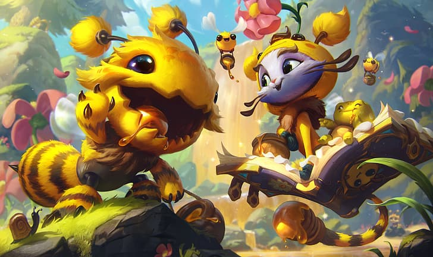

Yuumi, do LOL, pode sumir do competitivo em novo patch, diz desenvolvedor
Por Victor de Abreu, para o TechTudo postado 24 de janeiro de 2023
Yuumi, a Gata Mágica, pode estar com seus dias contados no cenário profissional de League of Legends. Segundo o desenvolvedor da Riot Games, David "Phreak" Turley, a atualização 13.1b, que chega nesta quinta-feira (26), tem a intenção de fazer com que a campeã desapareça das ligas profissionais. De acordo com o desenvolver, a razão para isso é que ela se tornou uma personagens das mais odiadas do LOL, tanto entre pro players como entre jogadores casuais, devido às suas habilidades. Não é necessário ser pro player para ver o estrago que Yuumi pode fazer ao acompanhar um companheiro de time, geralmente seu atirador, e transformá-lo em uma ameaça para o time adversário. Isso justifica o fato, inclusive, de que a personagem foi nerfada recentemente. Veja, a seguir, mais sobre a questão.
Lançada em 2019, Yuumi logo se tornou controversa, odiada por ser uma campeã muito frustrante de se jogar contra. Os motivos envolvem o fato de ela não poder ser focada enquanto está ligada a um companheiro de time, seu irritante potencial de poke e todo o seu arsenal, composto com muita cura e escudos. Há um número grande de campeões que apresentam uma ótima sinergia com a Yuumi e que podem levar o adversário a uma situação em que beira o impossível responder à combinação.
No vídeo, Phreak explicou que o nerf pesado sofrido pela campeã fará com que os duelos, em especial entre as duplas na rota inferior, sejam mais arriscados para a Gata Mágica e seu parceiro, impactando diretamente no metagame do cenário profissional. Apesar de tudo, espera-se que ela não seja tão afetada nas filas ranqueadas.
Em um exemplo recente, temos a partida entre Fluxo e Liberty pela primeira semana do CBLOL 2023 (1° Split). O jogador Alexandre "Cavalo" Fernandes optou pela Yuumi e foi muito relevante para a virada da Liberty, principalmente quando se ligava à Fiora de Thiago "Kiari" Luiz, o destaque da partida. Por sinal, esse mesmo confronto contou com Lucian e Nami na rota inferior do Fluxo, uma dupla que, ao lado da Yuumi, não deve mais ser vista com tanta frequência no cenário profissional por conta do nerf sofrido no patch 13.1b.
O problema da Yuumi nas ligas profissionais pode ser visto nas estatísticas gerais dos drafts. Até esta quinta-feira (26), a campeã sofreu um total de 166 banimentos, contando as partidas de todas as ligas do mundo em 2023. Esse número a coloca na terceira colocação entre os campeões mais banidos do competitivo atualmente, atrás somente do Maokai (179) e do Ryze (209). Somando-se à quantidade de vezes que foi escolhida em uma partida, 85 ao todo, Yuumi possui uma presença de 78% nas ligas. Porém, o novo patch pode mostrar uma realidade bem diferente para a Gata Mágica.
League of Legends tem código-fonte roubado e Riot é chantageada
Postagens recentes
Um registro de classificação indicativa na Coreia do Sul revelou mais um spin-off para a crescente lista de games saindo do universo de League of Legends. O game em questão se chama Mageseeker: A League of Legends Story e vai trazer como seu protagonista o personagem Sylas.
Leia maisJá faz um tempo que a Microsoft anunciou uma série de benefícios para os assinantes do Xbox Game Pass nos jogos da Riot, e nós finalmente poderemos resgatá-los! Os brindes chegam já hoje, dia 12 de dezembro, com muitas vantagens legais. Confira a seguir!
Leia mais